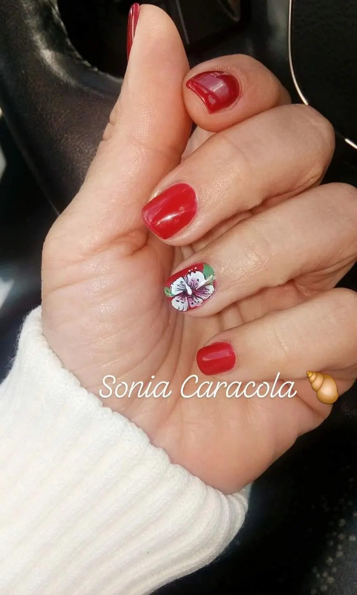
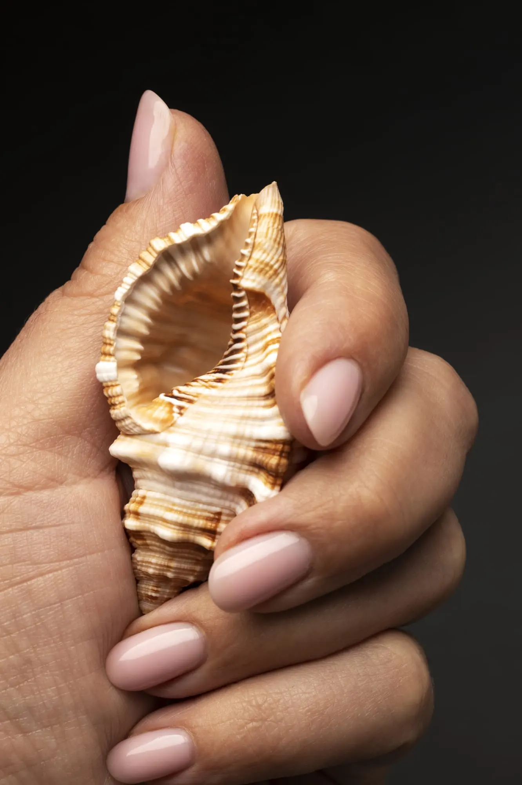
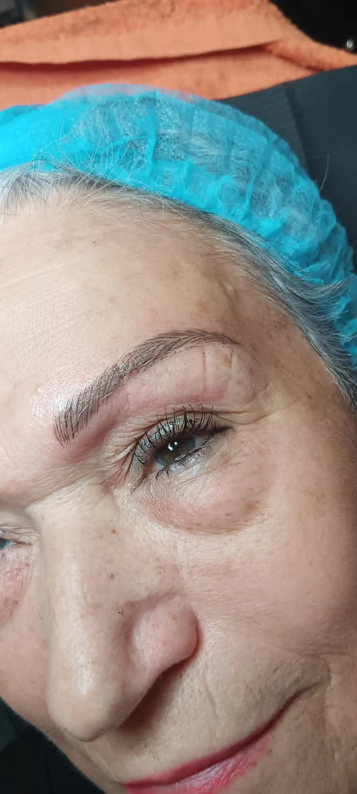

01Manicura clásica
Cuidado completo de tus manos con limado, preparación de cutícula y esmaltado impecable.
Más informaciónConsulta nuestros servicios más habituales. Para recibir una atención personalizada, contacta con Sonia Caracola y reserva tu cita.
En Sonia Caracola trabajamos servicios de belleza pensados para cuidar tus manos, pies, mirada y bienestar. Cada tratamiento se adapta a tu estilo, a tus necesidades y al resultado que quieres conseguir.

01Cuidado completo de tus manos con limado, preparación de cutícula y esmaltado impecable.
Más información 02
02Color duradero, brillo elegante y acabado uniforme para manos cuidadas durante más tiempo.
Más información 03
03Tratamiento estético para embellecer tus pies, mejorar el aspecto de las uñas y aportar bienestar.
Más información 04
04Cuidado de pies con enfoque relajante, exfoliación, hidratación y esmaltado con acabado profesional.
Más información 05
05Diseños personalizados inspirados en tu estilo, desde acabados naturales hasta propuestas más creativas.
Más información
06Extensión, forma y resistencia para conseguir una manicura definida, duradera y adaptada a tus manos.
Más informaciónAcabado ligero, cómodo y elegante para reforzar la uña y mantener un resultado pulido.
Más información08Retirada cuidadosa del esmalte para proteger la uña natural y preparar un nuevo tratamiento.
Más información
09Nail art, detalles especiales y acabados creativos para convertir tus uñas en un diseño único.
Más informaciónSi buscas un tratamiento adicional que no aparece en esta página, consúltanos sin compromiso. Te atenderemos personalmente en nuestro centro o llamando al 614 253 037.
Sí, trabajamos con cita previa para organizar el tiempo de cada servicio y darte una atención tranquila y personalizada.
Puedes llamarnos o escribirnos por WhatsApp. Te orientaremos según el estado de tus manos, pies, piel o el resultado que quieras conseguir.
Sí. Adaptamos forma, color, técnica y acabado a tu estilo y a la salud de la uña natural.
Sí, podemos valorar otros tratamientos de estética y belleza en el centro. Consulta con Sonia Caracola para confirmar disponibilidad.